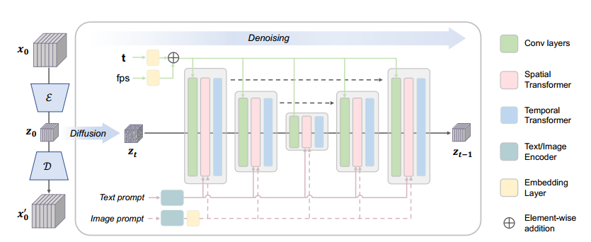
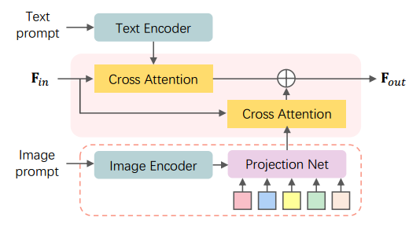
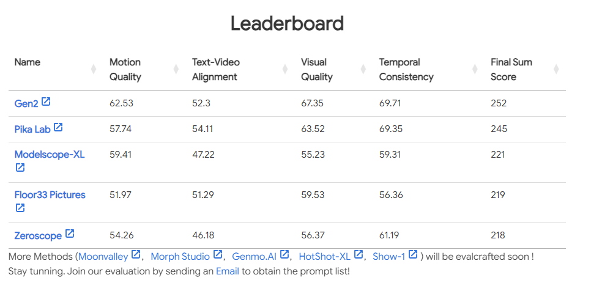
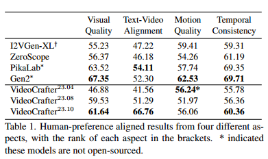
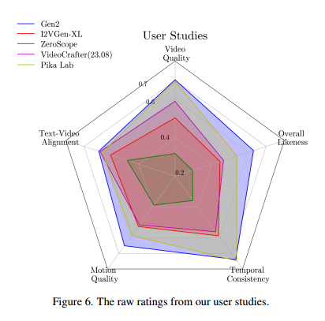

VideoCrafter1
VideoCrafter1: Open Diffusion Models for High-Quality Video Generation
阅读时间：2023-11-09
阅读目的：这是2023年10月腾讯才出的开源视频生成大模型，具有研究价值
Abstract
提出了第一个开源的I2V基础模型，能够将给定的图像转换为视频剪辑，同时保持内容保存约束，希望可以给社区的技术进步做出贡献
Introduction
T2I模型有：SD
T2V模型有：Make-A-video、Imagen video 基于级联模型
LVDM、Magic video、ModelScope、Align your Latents 基于SD，扩展时间层
Make-A-video、Imagen video、效果还不错，但是都是闭源的，Gen-2（Gen-1的论文阅读记录点这里）、Pika Labs、Moonvalley只能使用，没有开源模型和论文
ModelScope只能生成256 * 256的视频
Hotshot XL旨在将SDXL扩展到视频模型中，并生成8帧分辨率为512×512的gif
AnimateDiff提出将LORA SD模型的时间模块与空间模块相结合，但LORA模型在风格和概念构成能力方面限制了范围。
现在仍然缺乏能够生成高分辨率和高质量视频的开源通用T2V基础模型
I2V模型有：Gen-2和I2VGen XL
Gen2支持I2V，但是生成的运动方式很少，并且不开源。唯一的开源通用I2V模型是I2VGen XL，模型使用图像embedding来代替文本embedding来调整预训练的T2V模型。但是，它不能很好的遵循参考内容和结构。因此，开源社区迫切需要一个良好的I2V模型
所以文章分别提出了两个高质量视频生成的扩散模型：一个T2V模型，一个I2V模型
T2V模型建立在SD 2.1的基础上，通过将时间注意力层纳入SD UNet来捕捉时间一致性，采用图像和视频联合训练的策略来防止概念遗忘，可以生成1024 * 576、持续两秒的视频。
I2V模型基于T2V模型，接受文本和图像输入，使用Clip提取图像embedding并通过cross-attention注入SD的Unet结构（和SD的文本embedding注入一样）
Related Works
Imagen video和VDM提供了不错的级联方法
Methodology

整体是在SD的Unet结构基础上做更改：
- VAE（来自SD）负责将视频逐帧编码到隐空间
- 讲2D卷积扩展为3D卷积，每一层还包括spatial transformers 和 temporal transformers
- 语义注入调整为文本embedding和图像embedding的混合注入（也可以只有图像或者文本）
- 去噪过程T和视频fps均正弦编码后通过两层MLP映射，最后相加融合
对于T2V扩散模型，条件文本embedding对最终输出视频的视觉内容起着至关重要的作用。为了以兼容的方式向视频模型提供图像信息，必须将图像投影到文本对齐的embedding空间中。我们建议学习这种具有丰富细节的嵌入，以增强视觉逼真度。
文本embedding和图像embdding的混合注入过程：

对文本而言：通过Clip就可以得到文本embedding
对图像而言：虽然clip对齐了文本和图像，但主要是在语义级别上对齐，捕获细节的能力较弱。因此可以使用Clip VIT结构中最后一层的patch表示图像信息。然后再训练一个投影网络，将patch转化为图像embedding
最后结合文本embedding和图像embedding，注入cross-attention：

Experiments
这种大规模通用模型，从训练细节中我们也可以学到很多东西
数据集
LAION COCO：包含6亿张图像的高质量文本图像数据集
WebVid-10M：由视频网站和文本描述构成的大规模短视频数据集
自己收集的数据集：包含1千万个分辨率大于1280 * 720视频的大规模高质量视频
训练方法
采用SD使用的训练方法，从低分辨率到高分辨率训练
- 用256 * 256分辨率的图像对从图像模型扩展而来的模型训练80K轮，batch_size=256
- 用512 * 320分辨率的视频微调模型136k轮，batch_size=128
- 用1024 * 576分辨率的视频微调模型45k轮，batch_size=64
对于I2V模型则是训练一个映射，从图像embedding到cross-attention的embedding空间
评估指标
EvalCrafter于2023-10-17挂在arXiv上，提出了一种大型视频生成模型的测试基准和评估指标
截止写文时的榜单，Floor33就是本文对应的模型

实验结果


我的看法
总的来说，作为可以上榜单的开源大模型，后续有很多可以围绕着展开的工作，相比于在SD上微调，显然在VideoCrafter1上微调会有更好的效果，后续我会基于这个开源大模型进行研究，完成目前组里的视频大模型相关项目